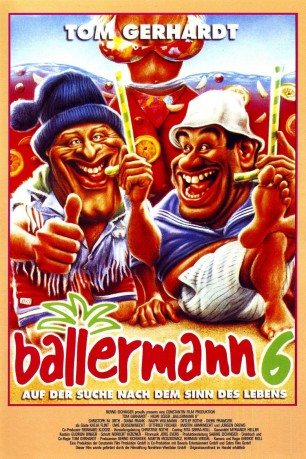

#11480 Ballermann 6
 gesehen am 16.07.2019
gesehen am 16.07.2019
 
 IMDB-Wertung: 5.0 / 10
IMDB-Wertung: 5.0 / 10  Metascore: 0
Metascore: 0 
Ballermann 6 - Das ist der Name der wahrscheinlich bekanntesten Kneipe auf Mallorca, wo es von urdeutscher Kultur nur so wimmelt. Sinn dieser Kneipe ist es, sich den Urlaub in der Touristenfalle Mallorca, wo es mehr Hochhäuser gibt als in den meisten Wohnsiedlungen deutscher Großstädte, durch Alkoholexzesse so erträglich wie möglich zu machen. Hierhin zieht es Tommie und Mario.on ihrem letzten Geld fliegen die immer gutgelaunten Vorzeige-Profis nach Mallorca, um für drei Tage im vermeintlichen Freibier- und Sexparadies eine richtige Sause zu machen.
Jahr: 1997
Dauer: 83 Minuten
FSK: 12
Land: Deutschland Studio: Constantin FilmTonspuren: - , - ,
Untertitel: Deutsch,
Auflösung: 1080p (1920x1080) Größe: 3246 MB
Genre: Komödie
Regisseur: Gernot Roll, Tom Gerhardt
Drehbuch: Tom Gerhardt
Soundtrack: Jörg Evers
Darsteller:
- Christoph M. Ohrt als Klaus
 Detlef Bothe als
Detlef Bothe als  Uwe Ochsenknecht als Cameo appearance
Uwe Ochsenknecht als Cameo appearance Tom Gerhardt als Tommie
Tom Gerhardt als Tommie- Hilmi Sözer als Mario
- Diana Frank als Maja
- Ralph Willmann als
- Dierk Prawdzik als Udo
- Katja Flint als Ann-Marie
- Ottfried Fischer als Deutscher Rentner
- Martin Armknecht als Helmut
- Jürgen Drews als Jürgen Drews
- Katrin Meincke als Cabriolady
- Edda Fischer als Angestellte
- Anja Roy als Gabi
- Willi Thomczyk als Sicherheitsbeamter (Düsseldorf)
- Tanja de Wendt als Sicherheitsbeamtin (Düsseldorf)
- Knacki Deuser als Steward
- Imke Brügger als Stewardess
- Jacqueline Jeske als Kind
- Ullo als Dicker
- Nicolay Weller als Mann mit Zeitung
- Russ Lukas Jukic als Charly
- Nicolai Stahl als Heiner
- Manuel Mera als Sicherheitsbeamter 1 Palma
- Miguel Rodríguez als Sicherheitsbeamter 2 Palma
- Francisca Forteza als Spanierin
- Carlos Ripoll als Kellner (Ballermann 1)
- Andrea Thiele als Claudia
- Jean-Luc Cuozzo als David
- Hartmut Kunze als Journalist 1
- Renco Bruhn als Journalist 2
- Alberto Klein als Angestellter Yachthafen
- Raúl Martín als Portier Golfclub
- Achim Brock als Ober Golfclub
- Manfred Tauchen als Golfer 1
- Nico van Rijn als Golfer 2
- Helmut Schafzahl als Conferencier Oberbayern
- Francisco Márquez als Barkeeper Disco
- José A. Nieto als Discobesucher
- Michael Szekely als Ledermacho
- Catherine Leclery als Schöne 'Frau'
- Birgit Stein als Blondine
- Miguel A. Juan als Kellner (Patio Flamenco)
- Hans-Gerd Kilbinger als Geschäftsführer
- Primitivo Daza als Antonio
- Manuel Barceló als Produzent
- Manuel Castellá als Koch
- Agustín Julio Roldán als Portier Hotel Playa Mar
- Jürgen Hahn als Offizier U-Boot
Datei: X:\1997\Ballermann 6 (1997, FSK12, 1920x1080).mkv seit 16.07.2019
Festplatte: Gemischt-01+Anime
 Es gibt insgesamt 83 Filme in der Gruppe '1997'
Es gibt insgesamt 83 Filme in der Gruppe '1997'